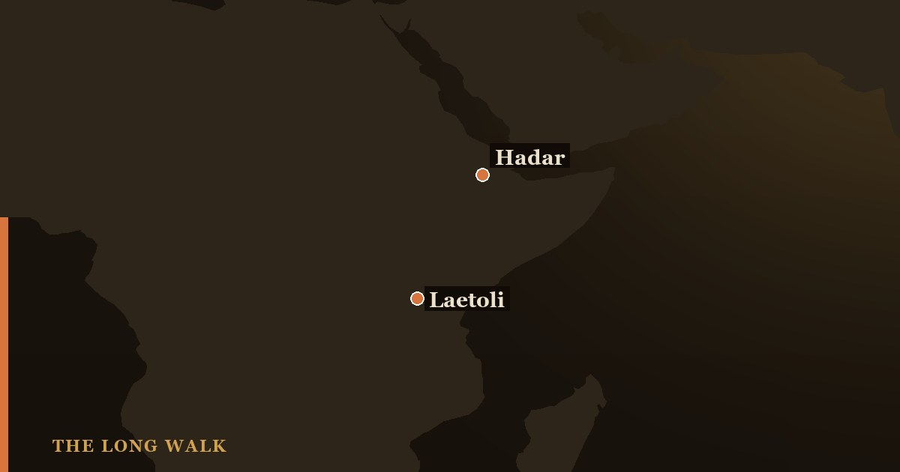

Laetoli (Tanzania) and Hadar (Ethiopia) are the two sites that defined early human walking. Laetoli gave us 3.66-million-year-old footprints showing a striding, upright gait; Hadar gave us Lucy and hundreds of skeletons showing how afarensis was built. Together, they prove that bipedalism—walking on two legs—was the first step toward becoming human, long before brain size increased.

In the story of human evolution, few moments are as pivotal as the discovery that our ancestors walked upright millions of years before they developed large brains or made stone tools. Two sites in East Africa—Laetoli in Tanzania and Hadar in Ethiopia—provided the hard evidence that changed everything. One gave us footprints frozen in volcanic ash; the other gave us skeletons so complete we could read their anatomy like an open book. Together, they painted a portrait of Australopithecus afarensis, the species that first walked as humans do today.
The discoveries at Laetoli and Hadar occurred decades apart, yet they tell a single story about a small-brained ape that abandoned the trees for the savanna and learned to stride upright. Understanding the differences between these two sites—and why both matter equally—is essential to grasping how humans became human.
| At a glance | Laetoli (Tanzania) | Hadar (Ethiopia) |
|---|---|---|
| Age | 3.66 million years | 3.2 million years |
| Famous discovery | Footprints (Footprint Trail G) | Lucy skeleton (AL 288-1) |
| Type of evidence | Behavioral — direct traces of walking | Anatomical — skeletal structure |
| Species | Australopithecus afarensis | Australopithecus afarensis |
| Key finding | Modern striding gait and arched foot | 40% skeleton shows limb proportions |
| Sample size | Footprints of 2–3 individuals | Hundreds of specimens, multiple individuals |
| Main contribution | Proves bipedalism in action | Shows how the body was built for walking |
Laetoli: Footprints Frozen in Ash
In 1976, paleontologist Mary Leakey led a team near the village of Laetoli in northern Tanzania and uncovered something extraordinary: footprints. Not bone, not teeth, but the actual impressions left by feet walking across soft volcanic ash 3.66 million years ago. The ash, ejected from nearby volcanoes during the Pliocene epoch, hardened into a natural mold that preserved every detail of the walker's sole.
The most famous find, called Footprint Trail G, shows at least two individuals—possibly three—walking together in the same direction. What strikes every scientist who studies them is how modern they look. The footprints show a striding gait with a well-developed arch, a heel strike followed by a push-off from the ball of the foot. There is no ape-like splaying of the toes, no awkward sideways shuffle. These were the footprints of an upright walker, and they belonged to Australopithecus afarensis.
Laetoli also yielded teeth and jaw fragments of afarensis, confirming the identity of the walkers. But it is the footprints that matter most: they are direct behavioral evidence of habitual bipedalism, not inferred from bones but observed in action. A skeptic might debate what a skeleton tells us about how its owner moved, but footprints leave no room for argument. These creatures walked upright on the African savanna, not in trees, and they did so with confidence and efficiency.
Hadar: The Bones of Lucy
In 1974, in the Afar region of Ethiopia, a young paleoanthropologist named Donald Johanson spotted fragments of a fossil arm bone eroding from a hillside. Over the following weeks, his team excavated a skeleton so complete that it would become one of the most famous fossils in the world. They named her Lucy—or, in the catalog system, AL 288-1—and she was a female Australopithecus afarensis who died about 3.2 million years ago.
Lucy stood barely 3.5 feet tall and weighed perhaps 65 pounds, but her skeleton revealed a creature caught between two worlds. Her arms were long for her body, slightly longer than a modern human's, a hint that climbing trees was still part of her behavior. Yet her pelvis, her knee, her foot—all were unmistakably adapted for upright walking on the ground. When Johanson and anatomist Owen Lovejoy studied her skeleton, they saw evidence of a creature that had committed to bipedalism but had not yet lost all the climbing adaptations of her ancestors.
But Lucy was only the beginning. Hadar, unlike Laetoli, was a bonanza. The sediments there yielded hundreds of afarensis fossils, including a group of individuals from a single time level called the First Family (catalog number AL 333). These specimens allowed scientists to document the range of variation within the species, to see males and females, young and old, and to understand how afarensis was built as a whole.
Footprints Versus Fossils: Two Forms of Evidence
The two sites offer complementary kinds of evidence, and this is why they are so powerful together. Laetoli's footprints tell us how afarensis moved in life—the gait, the stride, the pressure distribution under the foot. Hadar's skeletons tell us why the body was shaped that way—the angles of the pelvis, the architecture of the knee, the position of the foramen magnum (the hole in the skull through which the spinal cord passes). One is a snapshot of behavior; the other is the anatomy that enabled it.
Laetoli's footprints also predate Lucy by about 460,000 years, showing that the afarensis way of walking was stable and established across a wide time span. This rules out the possibility that Laetoli represents a short-lived experimental phase. Bipedalism was the norm for afarensis, the default strategy for life on the savanna.
One Species, Two Sites, One Revolution
Both Laetoli and Hadar have revealed that Australopithecus afarensis was a fully committed biped with a brain only slightly larger than a chimpanzee's. The species lived between roughly 3.9 and 2.9 million years ago, and it walked upright for the entire duration of its existence. No evidence suggests that afarensis made stone tools or had language. Yet it had taken the most important step toward becoming human.
Laetoli and Hadar are also part of a larger narrative about why humans started walking upright in the first place. Some scientists argue that bipedalism freed the hands to carry food and tools; others suggest it was an adaptation to cooling climate and expanding grasslands. Whatever the cause, the effect was clear: once early hominins committed to life on two legs, brain expansion, tool use, and language would eventually follow. But that would take millions of years.
Why They Matter
Laetoli and Hadar matter because they answer the deepest question in paleoanthropology: what made us human? The conventional answer points to intelligence, language, and creativity—the gifts of the large human brain. But Laetoli and Hadar suggest a humbler origin. Before any of those things, before we were even particularly smart, we learned to walk upright. That single adaptation, so ordinary to us today, set our ancestors on the path that led to everything we are.
Together, the footprints of Laetoli and the skeleton of Lucy show us a species in transition, committed to a new way of life but not yet the master of the world. That mastery would come later. For now, 3.66 and 3.2 million years ago, the victory was simply this: a small ape stood up, took a step, and walked into the future. Everything else—consciousness, civilization, the ability to wonder at our own origins—began with that footprint.
See how Laetoli's footprints and Hadar's Lucy anchor the Australopithecus afarensis story on the family tree.
Explore the family tree →Frequently asked questions
What is the difference between Laetoli and Hadar?
Laetoli (Tanzania) and Hadar (Ethiopia) are the two sites that defined early human walking. Laetoli gave us 3.66-million-year-old footprints showing a striding, upright gait; Hadar gave us Lucy and hundreds of skeletons showing how afarensis was built.
- Leakey, M.D. & Hay, R.L. (1979). 'Pliocene footprints in the Laetolil Beds at Laetoli, northern Tanzania.' Nature 278. nature.com
- Johanson, D.C. et al. (1982). 'Morphology of the Pliocene partial hominid skeleton (A.L. 288-1) from the Hadar Formation, Ethiopia.' AJPA. humanorigins.si.edu
- Smithsonian Human Origins — Laetoli footprints. humanorigins.si.edu